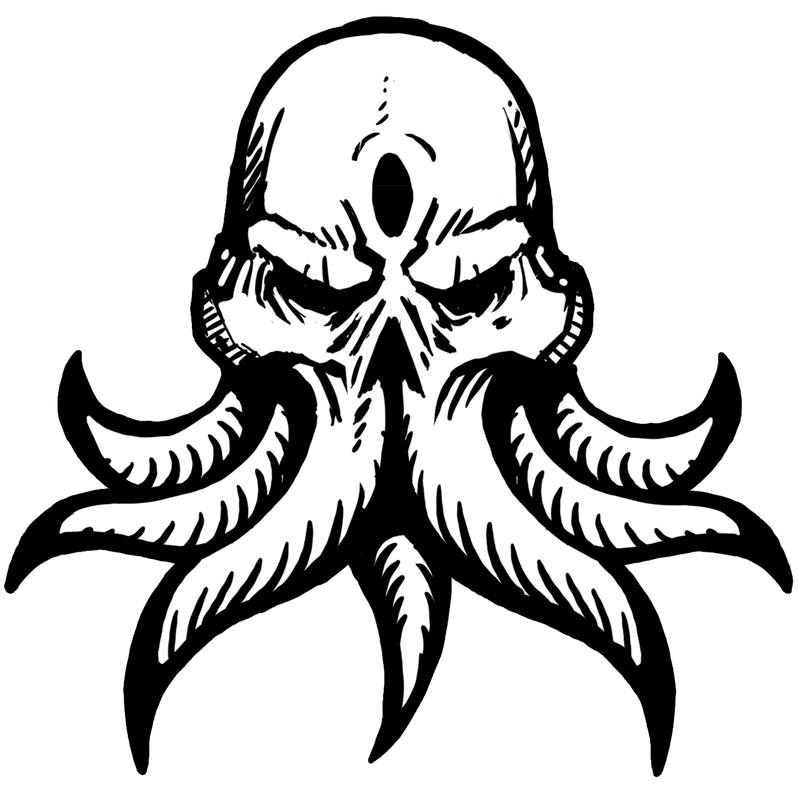

Destinado a jogadores que queiram desafio, mas menor que outros 3D do mesmo gênero
como "Dark Souls" e "Bloodborne", conhecidos pela sua extrema dificuldade, Lost in the Dephts,
será um jogo 2D do gênero Soulslike, Metroidvania, gêneros que em conjunto fazem com que os montros e mapas se tornem mais
complicados de avançar muito rápido, fazendo com que os jogadores fiquem mais tempo em algumas áreas para desbloquear ela inteira.
Inicialmente feito para Pc e posteriormente para consoles.
Terá monstros áquaticos grotescos, feitos para sobreviver na escuridão, tendo desafios importantes.
evolução de personagem em forma de árvore de pontos, onde cada gameplay é única, podendo desbloquear no decorrer do jogo
de acordo com o seu estilo de jogo, aprimorando estatísticas do personagem, como vida, força e armas.
Experiência única para cada jogador com trilha sonóra envolvente com o ambiente aquatico.
Hollow Knight e Have a nice death! são bons exemplos do objetivo final
Para mais informações. consultar a página "Home" e o "Perguntas Frequentes"
